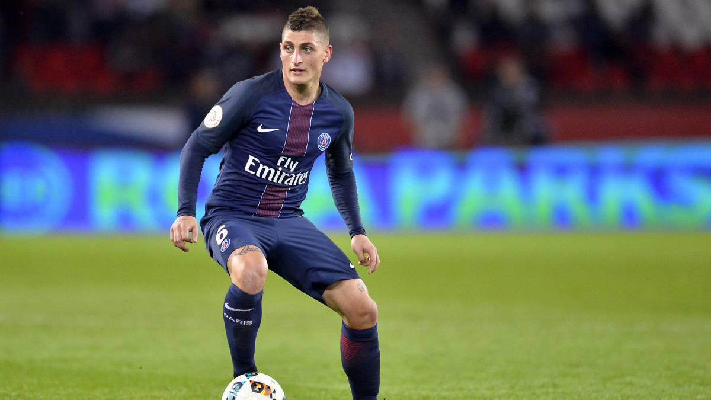

Medio
MedioCampista
En el fútbol, un centrocampista, mediocampista, mediocentro defensivo, enganche, volante ofensivo, volante interior
es el futbolista que juega en el centro del campo o por los costados y que se ubica entre los defensores y el delantero.
Sus funciones son variadas y dependen de si el centrocampista es ofensivo o defensivo. Por ejemplo,
las funciones de un centrocampista defensivo son, dar equilibrio al equipo entre la defensa y el ataque,
recuperar el balón cuando está en posesión del equipo contrario, entre otras, mientras que las de un centrocampista ofensivo son,
construir y organizar juego, dar pases a los delanteros y hacer goles.
MedioCampista de Contención
Adelanta unos metros su zona, para captar rechaces después de un centro al área. Durante la fase de posesión,
busca canalizar los balones a profundidad, o bien, conectar con los mediocampistas interiores al pie,
o al espacio con el “9” para definir al arco. Procura tener un buen disparo de media
Es apoyo permanente con los medios interiores que están de espalda y con marca al arco rival,
o con los jugadores de banda que intentan ganar línea de fondo con una triangulación;
Esto garantiza la continuidad en la fase de posesión.

¿A nivel general, que principales aspectos valoraremos en un Medio?
- Los mediocampistas deben de caracterizarse por ser jugadores inteligentes,
por tener un elevado nivel de concentración y por poder establecer jerarquías entre sus compañeros de equipo. - Tiene que tener la capacidad de tomar decisiones de forma rápida y certera.
- Tener buenas habilidades con sus pies y movimientos pues es el encargado de controlar el juego.
- Buen visión periférica que le permita reconocer, localizar e identificar de forma adecuada toda la información a su alrededor
¿Habilidades de los MedioCampistas?
Una de las habilidades mas importantes del volante o mediocampista ideal es el desarrollo de una visión periférica completa
que brinde la habilidad de reconocer, localizar e identificar la información del campo visual.
Esto le permitirá al volante anticipar y ejecutar su siguiente jugada en el momento idóneo. Por ejemplo,
antes de recibir el balón, el buen volante ya sabe la ubicación del jugador a quien le hará el pase de la misma manera.
MedioCampista ofensivo
Dentro del 11 titular porta el dorsal 10. También llamado enganche o Volante con llegada,
es el centrocampista más adelantado y se sitúa por detrás de los delanteros,
su función es la de coordinar el ataque del equipo, dar el último pase a los delanteros o aprovecharse de los huecos libres que deja la defensa rival.
Suelen ser jugadores muy elásticos y con una visión de juego extraordinaria,
algunos también poseen un gran talento y técnica para regatear o hacer diferentes filigranas.
Al igual que ocurre con los MC, el puesto de MCO es uno de los más difíciles y relevantes dentro de una formación,
ya que requiere que el jugador posea gran variedad de habilidades para poder desempeñar su tarea de forma satisfactoria.
Las formaciones más comunes en las que se utiliza esta demarcación son 4-2-3-1, 4-3-3 o 4-4-2 en rombo.
Medio
son algunos ejemplos de como trabaja un Medio:
MedioCampista